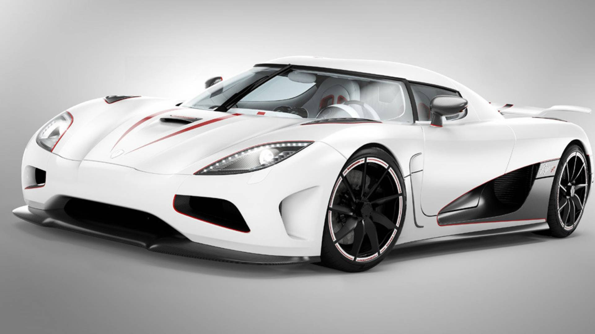
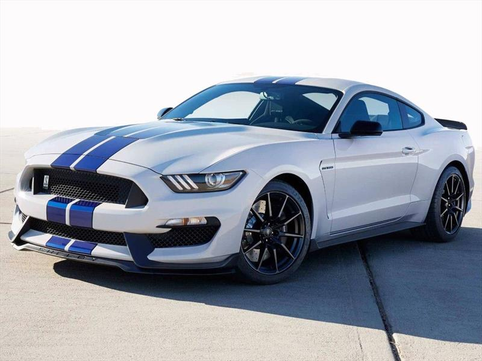
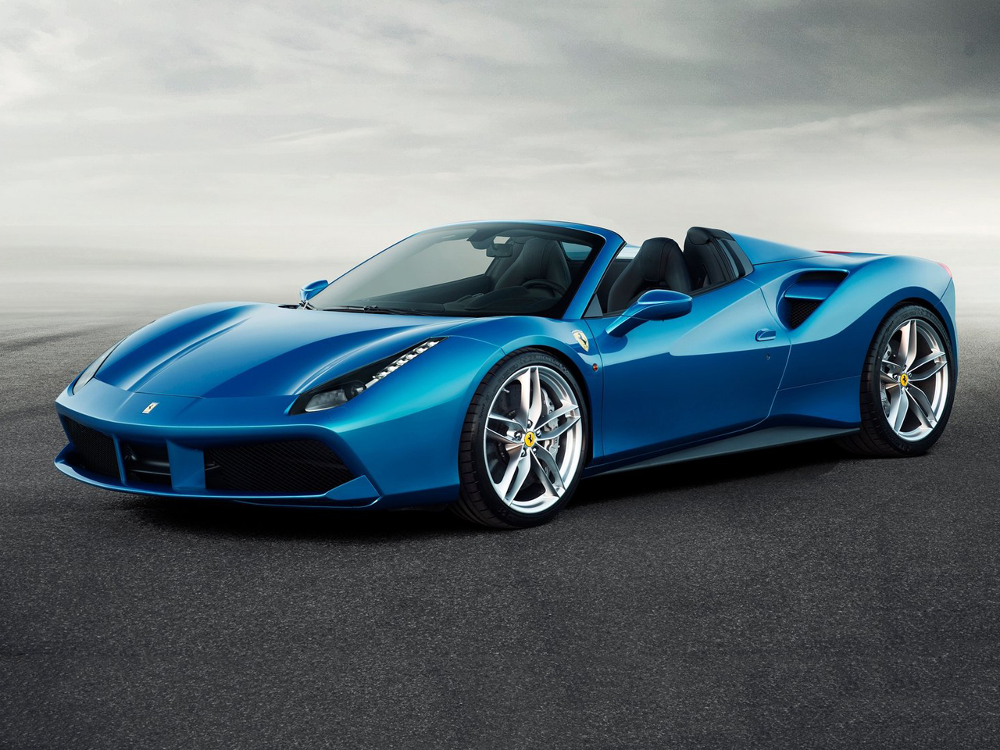

-
lamborghini urus

El alma de un superdeportivo y la funcionalidad tipica de un SUV: esto es el Lamborghini Urus, el primer vehiculo utilitario superdeportivo del mundo. El Urus, identificable como un autentico Lamborghini con su inconfundible ADN, es al mismo tiempo un coche innovador: sus proporciones extremas, su diseño puro Lamborghini y su rendimiento excepcional lo hacen absolutamente unico. La distintiva silueta del Urus con una dinamica linea coupe muestra sus orígenes superdeportivos, mientras que sus excepcionales proporciones transmiten fuerza, solidez y seguridad. Los factores de exito del Urus son sin duda su diseño de vanguardia, una extraordinaria dinamica de conduccion y unas emocionantes prestaciones. Lanzar el primer Super Sport Utility Vehicle del mundo y, al mismo tiempo, ser leal al ADN de la marca ha sido posible. El Urus tambien expresa su extrema versatilidad en el diseñeo, que satisface la exigencias de los mas variados clientes mediante Style packages, detalles externos de fibra de carbono o el paquete Off-Road.
Diseño:
El Lamborghini Urus tiene un diseño de vanguardia, distintivo y aerodinamico con multiples almas: deportiva, elegante y todoterreno. Sus superficies musculosas transmiten fuerza y seguridad, mientras que los neumaticos de dos medidas diferentes le otorgan un aspecto de superdeportivo de lujo. Todas las superficies están diseñadas con una clara atención a la funcionalidad. A simple vista ya se pueden reconocer algunos detalles y formas icónicas de Lamborghini, como la "Y" y los elementos hexagonales, el capó delantero con una cúpula central y las líneas transversales de la puerta trasera. Sus proporciones extremas y la línea de silueta única hacen del Urus un verdadero Lamborghini. Además, sus proporciones son únicas, ya que se trata del SUV más bajo de la categoría. El diseño del Urus se inspiró en el legado del LM002 en lo que respecta a la cúpula de potencia que muestra la posición del motor y la significativa línea diagonal, mientras que las puertas sin marco rememoran los icónicos sistemas de Marcello Gandini.
-
koenigsegg agera r
El Koenigsegg Agera es un superdeportivo biplaza sueco capaz de alcanzar en su versión más potente 1.155 caballos. Entre sus hitos más representativos podemos citar su capacidad para alcanzar los 300 km/h desde parado y volverse a detener por completo en sólo 21.19 segundos. Tiene un precio de partida en su versión de acceso de 1.2 millones de dólares, al cambio unos 924.000 euros, lo que sitúa al Bugatti Veyron por precio y prestaciones como rival más cercano.
Detalles
Koenigsegg ofrece una versión aún más radical con el Koenigsegg Agera R, que con 1.140 caballos es capaz de alcanzar los 440 km/h, llegando a los 100 km/h en 2.9 segundos. El motor del Koenigsegg Agera es un V8 de 5 litros con un sistema de doble turbo que entrega 960 caballos a 7.100 rpm, con un par máximo de 1.100 Nm a 4.000 rpm asociado a una transmisión automática de doble embrague Con este bloque es capaz de alcanzar los 100 km/h en 3 segundos, empleando 8 segundos en alcanzar los 200 km/h y consiguiendo un 0 a 200 km/h y de nuevo detenerse por completo en 13.5 segundos, alcanzando fuerzas laterales de hasta 1.5g con un consumo combinado de 14.7 l/100 km.
-
Ford mustang
El Mustang está diseñado para adaptarlo a la manera que conduces, hasta el último detalle. Desde el diseño del panel de instrumentos y el sonido de su rugido hasta cómo se siente tomar una curva, esta leyenda nació para que la personalices a tu gusto. Además, el Mustang es el Auto Deportivo Mediano con Más Alta Calificación de 2018 en Calidad Inicial.
Motores del Ford Mustang:
El enfoque más europeo de este nuevo Ford Mustang ha llevado al pony americano a estrenarse en nuestro continente con dos motores. Un cuatro cilindros, el 2.3 Ecoboost de 317 CV, muy potente y enérgico; y un ocho cilindros, siguiendo la tradición Mustang, el 5.0 V8 del Ford Mustang GT con 421 CV de potencia. Con la actualización de 2017 se estrena también una caja de cambios automática de 10 relaciones. La caja de cambios manual, por su parte, recibe un embrague bimasa.
-
Ferrari 488 spider
EL FERRARI 488 SPIDER REPRESENTA EL CAPÍTULO MÁS RECIENTE DE LA INTERMINABLE HISTORIA DE AMOR DE MARANELLO CON SUS COCHES DEPORTIVOS DESCAPOTABLES CON MOTOR V8, UNA HISTORIA QUE EMPEZÓ CON LA VERSIÓN TARGA DEL INMORTAL 308 GTS Y QUE CONDUJO AL DESARROLLO DE LA ARQUITECTURA SPIDER.
Cada una de las áreas del 488 Spider ha sido diseñada para erigirse en nuevas referencias tecnológicas dentro del sector, empezando por el RHT (Retractil Hard Top – Techo Duro Retráctil), a partir del cual se ha desarrollado el coche.Diseño:x
LAS CARACTERÍSTICAS DEL 488 SPIDER MUSCULAR Y ENCANTO DEPORTIVO El 488 Spider, diseñado en el Ferrari Design Centre, tiene un diseño nuevo y radical que gira entorno a sus requisitos aerodinámicos y que retrata brillantemente el placer de conducción a techo descubierto con deportividad y prestaciones. El 488 tiene las proporciones clásicas de un Ferrari con motor central trasero con una ala delantera musculosa en la que se integra el parachoques y donde su frontal otorga al coche sensación de poder y velocidad, y que inmediatamente te hace dirigir la atención a sus flancos donde destacan nuevas tomas de aires para los intercoolers.